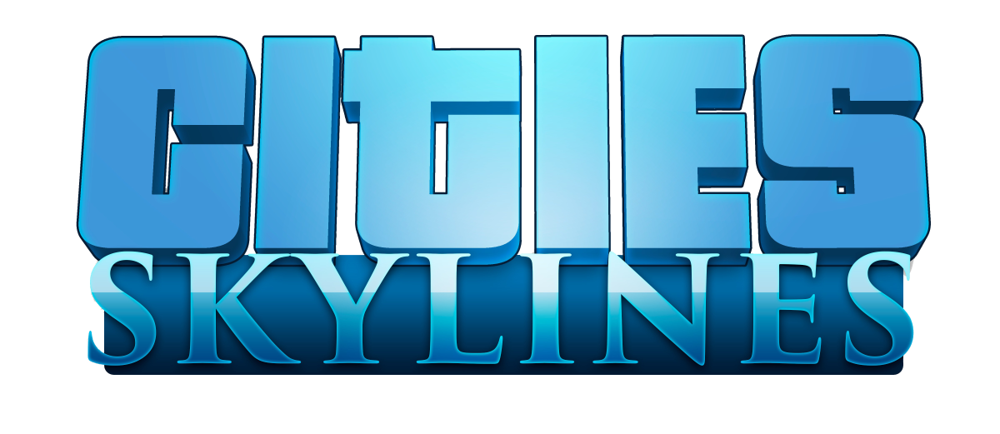
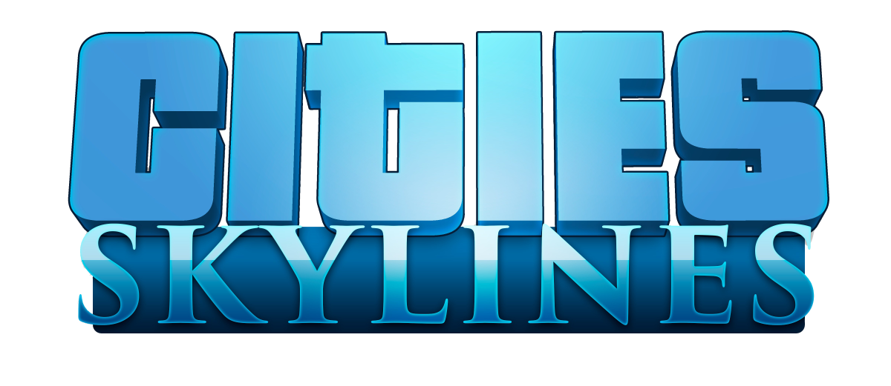

What design choices did you make and why?
Describe the choices you made (layout, typography, color, imagery) and the reasoning behind them.
What was difficult to code? How did you solve it?
Explain any technical challenges and the solutions or trade-offs you implemented.
How did you adapt your design for mobile?
Describe responsive strategies used (flexbox, media queries, hiding non-essential images, etc.).
What did you learn about Flexbox or CSS positioning?
Share key lessons learned and tips for future layouts.
What would you add or change with more time?
Ideas for improvements, interactions, or additional content.